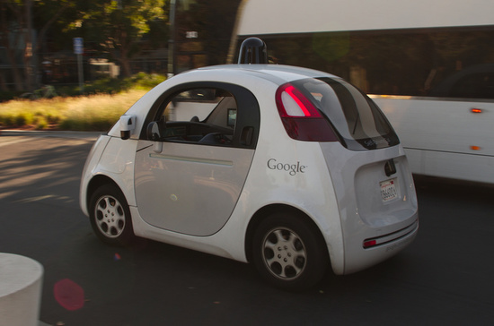

Overview
Artificial Intelligence will act as a catylist to future innovation. Ever sisnce the 1950's AI has advanced at an impressive rate. Eventually, it will become integrated in every part of all of our lives. AI has already proven itself useful in a variety of situations, and as progress continues, this list will only grow.
The concept of AI originated with the curiousity of a single man. Alan Turing was intrigued with the concept of machines having intelligence indindistinguishable from humans. He went on the create the Turing Test in 1950 in order to determine if machines and humans could have the same mental abilities. The test was simple. A tester would ask a set of questions to a machine and a human without knowing who was who. If the tester could not determine who was the human and who was the computer after the questions, the AI would pass the test. This was an innovative concept at the time and inpsired many others within the feild to further his research.
A monumental use of AI that we're already seeing is the implementation of this technology in self-driving cars. Companies such as Uber, Tesla, Google, and Lyft are all heavily investing in Artifical Intelligence in order to create a reliable and publicly avaiable self driving car. It's estimated that if just 10% of the cars on the road were autonomous, this could save more than 1000 lives. If this number was 90%, this could save more than 21,000 lives a year.
Progression of Self-Driving Technology in Google:
| Date | Accomplishment |
| 2009 | Development begins led by cofounder of Google, Sergey Brin. |
| 2010 | Lawmakers begin to express concerns over how to regulate self-driving cars. |
| 2012, May | The first car is liscensed using Google's experimental driveless technology in the U.S. |
| 2014, May | Google reveals new prototype that has no steering wheel, gas pedal, or break pedal. |
| 2014, December | Google reveals a fully fuctional prototype for experimentation and learning called the Firefly. |
| 2015 | The first driverless car is riden by a legally blind man in Austin, Texas. |
| 2016, December | The unit is renamed Waymo. |
| 2017, October | Waymo begins testing fully autonomous minivans on public roads in Arizona. |
AI has also shown its worth in the courtroom. A three-year old argorthim by Lawgeex trained to analyze contracts competed against twenty experienced attorneys in order to highlight and indentify 30 proposed legal issues in five standard non-disclosure agreements. The lawyers managed an average of an 85% accuracy rating and the algorithm managed a 94% accuracy rating. Furthermore, it took the lawyers anywehre from 51 minutes to 2.5 hours to complete the taks. Meanwhile, the AI only took 26 seconds.
Three Vital Ways AI Will Further Humanity:
- Precision Medicine
- Sophisticated Cybersecurity
- Efficient & Precision Farming
References
Title:"28 Best Quotes About Artificial Intelligence"
- Author: Bernand Marr
- Publication: Forbes
- Date: 2017
- https://www.forbes.com/sites/bernardmarr/2017/07/25/28-best-quotes-about-artificial-intelligence/#34e0de4d4a6f/
Title:"11 Times AI Beat Humans at Games, Art, Law and Everything in Between"
- Author: Jessica Miley
- Publication: Interesting Engineering
- Date: 2018
- https://interestingengineering.com/11-times-ai-beat-humans-at-games-art-law-and-everything-in-between
- Author: Sarah Griffiths
- Publication: Daily Mail
- Date: 2013
- https://www.dailymail.co.uk/sciencetech/article-2474951/Are-robots-better-motorists-HUMANS-Self-driving-cars-eliminate-traffic-deaths-reduce-congestion.html
Title:"3 ways Artificial Intelligence will change the world for the better"
- Author: Sandhya Venkatachalam
- Publication: World Economic Forum
- Date: 2017
- https://www.weforum.org/agenda/2017/05/artificial-intelligence-will-change-the-world-heres-how/